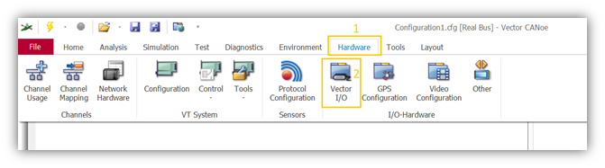
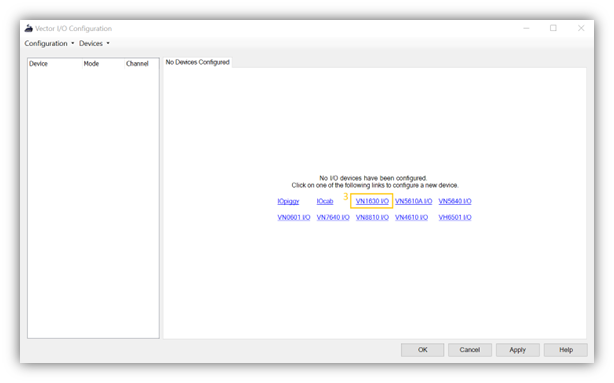
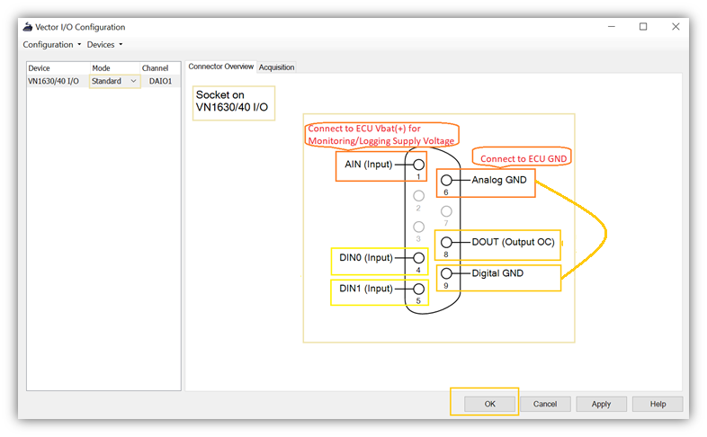

how to use VN HW IO piggy in automotive testing
hardware and software required
- VN HW with IO piggy.
- example VN1630A HW.
- Vector CANoe software.
- DB9 Male connector.
- 12v relay (GoodSky relay 1 pc ~30 rupees) for controlling Digital out. Required only for loads more than 500ma.
- Banana connectors. Reuired only if your HW setup has feasibility.
- Power supply.
Features of VN1630 IO
- 1 Analog input (Range 0V to 18V, 10 bit resolution, 1kHz sampling rate)
- 1 Digital Output (Open Drain, External supply up to 32V, Max current 500mA)
- 2 Digital Input (Range 0V to 32V, Schmitt trigger high 2.7V & low 2.2V)
where can i find 🧐 vector IO hardware configuration and how to configure 👨🔧
- Open CANoe configuration
- go to Hardware 👉 Vector I/O 👉 VN1630 IO
- select Standard Mode 👉 OK
  
Use below Highlighted auto generated system variables for Analysis and Controlling.
👉 verify IO: Environment 👉 System Variables 👉 System-Defined 👉 IO 👉 VN1600_1